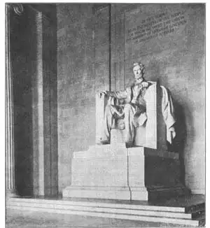
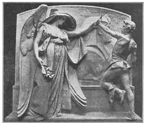

57
DANIEL CHESTER FRENCH
丹尼尔·切斯特·佛兰奇

THE Great Sphinx is the biggest stone statue in the world. The Statue of Liberty is the biggest bronze statue in the world. The biggest marble statue in the world is in the Lincoln Memorial in Washington. The Lincoln Memorial is a beautiful marble building given by the United States in memory of President Lincoln. The statue inside is a huge figure of Abraham Lincoln. It is made up of twenty large pieces of marble so carefully carved and fitted together that the statue seems to be all one piece.
Now, just because a statue is big doesn’t mean that it is a beautiful statue. A little piece of sculpture as big as your hand may be much more beautiful than a huge statue as big as a house. But this biggest marble statue is beautiful. It is great in other ways than just bigness.
The Lincoln statue is the only one in the building. Do you remember another great shrine with a single statue inside? See Chapter 37. The inner walls of the Memorial are decorated with huge paintings, but the whole building seems made just to hold this one statue. Lincoln is seated in a peculiar kind of chair that looks like a throne. He sits facing the door so that you stand before him when you enter.
The whole memorial is so beautiful and impressive, so simple and so fitting, that you feel as if the spirit of Lincoln himself were in the building. I don’t believe a single boy who knows anything of Lincoln’s story could keep his hat on inside the Lincoln Memorial, no matter how careless he might usually be about such things. See picture No.85-2 in Chapter 85.
The sculptor of this wonderful statue of Abraham Lincoln was Daniel Chester French. Let me tell you about two of his many other statues.
Daniel Chester French carved the Minute Man that stands on the battle-field at Concord, Massachusetts. Where the statue stands, the road crosses a little wooden bridge over a stream and it was at this crossing that the New England farmers fired on the British soldiers— fired “the shot heard round the world.” The Minute Man was placed there in memory of those farmer soldiers. They were called minute men because they kept themselves ready to go to fight the enemy at a minute’s notice. The statue shows a minute man who is plowing when the call to arms comes. He leaves the plow in the field as he snatches his musket. It was French’s first statue, made when he was twenty-three.

No.57-1 ABRAHAM LINCOLN（《阿伯拉罕·林肯》） FRENCH（佛兰奇 制）
Photograph by Publishers Photo Service

No.57-2 DEATH STAYING THE HAND OF THE SCULPTOR（《死神阻止雕刻家干活》）
FRENCH（佛兰奇 制）
Courtesy of The University Prints.
Some years later Daniel Chester French made a statue called “Death Staying the Hand of the Sculptor.” The statue shows the Angel of Death reaching out her hand to take the hand of a young sculptor who is carving a sphinx in bas relief. Of course when Death takes his hand the sculptor must leave his work unfinished. The statue is in memory of a young sculptor named Millmore, who died almost at the beginning of his work. It is sometimes called the Millmore Memorial.
【中文阅读】
《狮身人面像》是世界上最大的石雕，《自由女神像》是世界上最大的青铜像，华盛顿的《林肯纪念堂》是世界上最大的大理石雕像。林肯纪念堂是美国为了纪念林肯总统而修建的一栋非常漂亮的大理石建筑物。纪念堂内有阿伯拉罕·林肯的一尊巨大的雕像。雕像是由二十块大理石精雕细琢、完美拼接而成。
现在看来，大的雕像并不意味着是漂亮的雕像。像手掌那么小的一尊小雕像可能会比像房子那么大的雕像好看得多。但是，这座世界最大的大理石雕像的的确确非常漂亮。它的美不仅仅体现在“大”上。
林肯雕像是林肯纪念堂内唯一的雕像。还记得那个只供奉一座雕像的神庙吗？参见第37章。纪念堂的内壁上有很多巨幅装饰画，但是整个建筑物好像就专为容纳这一尊雕像而建。雕像上的林肯坐在一把奇特的椅子上，这把椅子看上去像一个国王宝座。林肯坐在正对着门的地方，这样人们进门就能一睹其风采。
整个纪念堂看上去非常漂亮壮观、简约恰当，让人感觉到林肯的精神在整个纪念堂里无处不在。我相信，凡对林肯的事迹有所了解的孩子，走进纪念堂内就会情不自禁地脱帽致敬，不管他平时是多么不在意这些事情。参见第85章图85-2。
这座绝妙雕像的制造者是丹尼尔·切斯特·佛兰奇。接下来，请容许我介绍一下这位雕刻家的另外两件作品。
丹尼尔·切斯特·佛兰奇还雕刻了《一分钟人》。这座雕像现在位于马萨诸塞州康科德的古战场上。一条小溪在雕像的前面流淌，一座小木桥直抵对岸。正是在此处，新英格兰的民兵朝英国士兵打响了 “响彻世界”的第一枪。这座《一分钟人》雕像正是为了纪念当时打响第一枪的那些民兵们。我们之所以把他们叫做“一分钟人”，是因为他们人人都做好了下一分钟同敌军进行殊死战斗的准备。这座雕像刻画的“一分钟人”正在耕地，他听到战斗的号角，立刻丢下手中的犁，抓起滑膛枪，准备战斗。这是佛兰奇23岁时创作的第一座雕像。
几年后，丹尼尔·切斯特·佛兰奇又刻了一座叫做《死神阻止雕刻家干活》雕像。从雕像上我们可以看到，死亡女神正伸手握住一位年轻雕刻家的手，他正在雕刻一座狮身人面像的浅浮雕。毋庸置疑，一旦死亡女神抓住了他的手，他就再也没有办法完成作品了。这座雕像是为纪念一位名叫米尔莫尔的年轻雕刻家。他刚开始创作就去世了，所以有时候这座雕像也叫做“米尔莫尔纪念碑”。